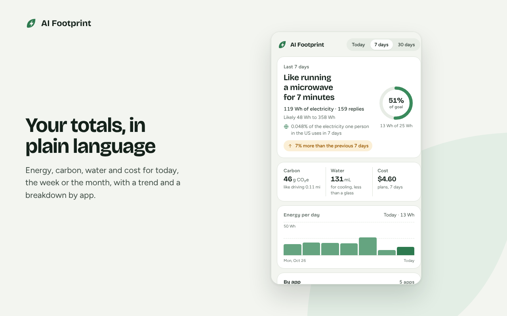
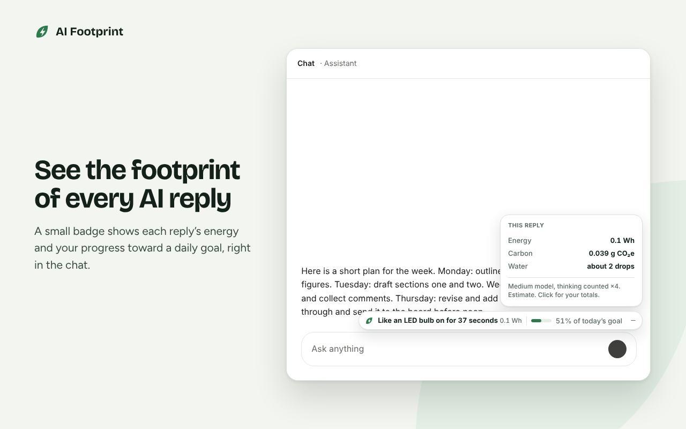
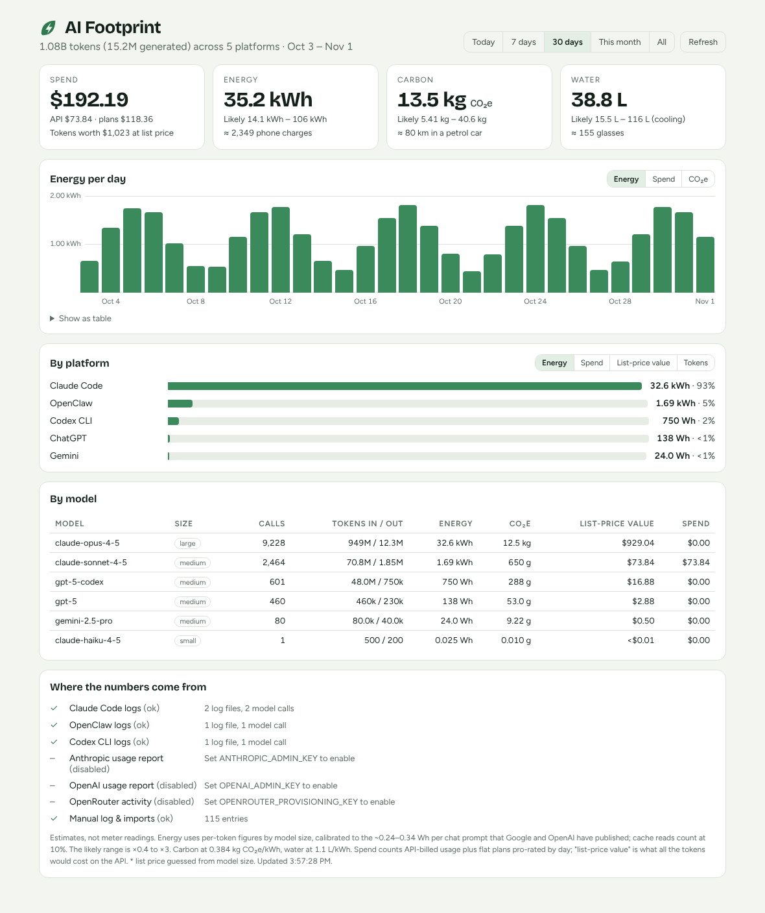
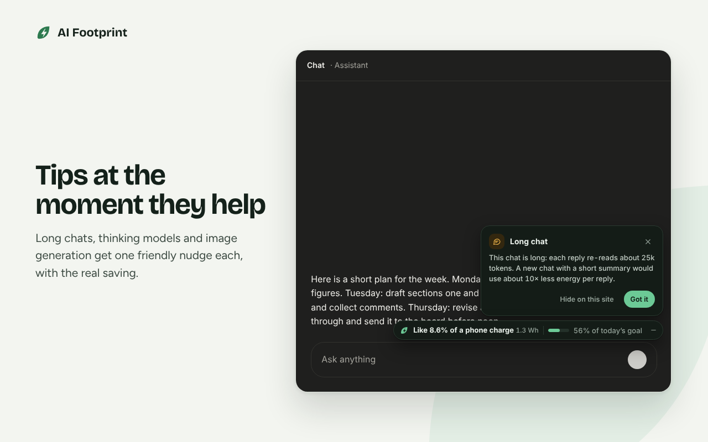
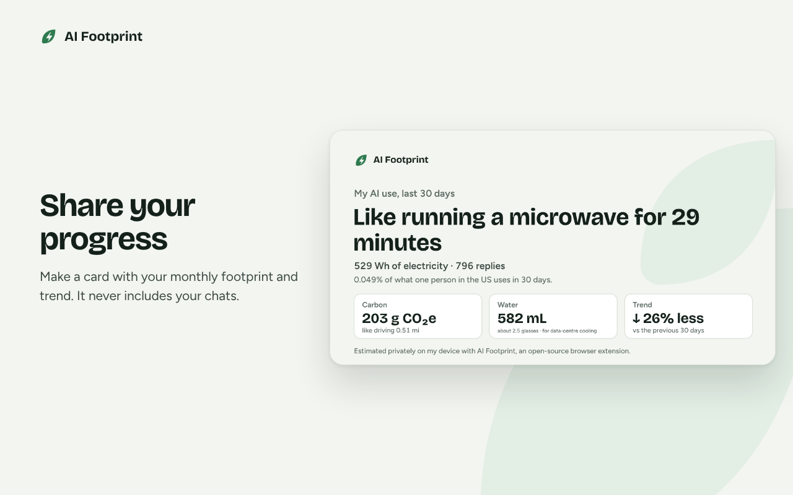
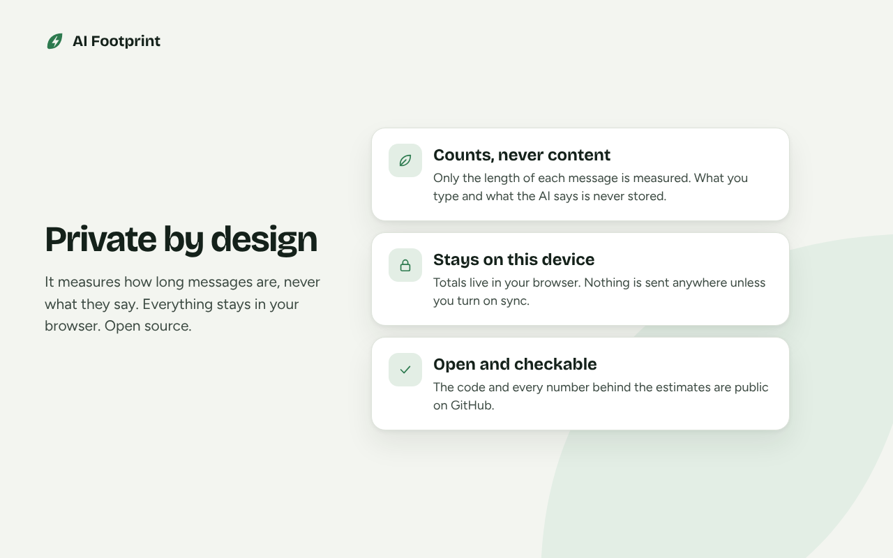

Browser extension
For anyone using AI chat in a browser. A small badge under each reply, a popup with your totals, and tips at the moment they help.
- ChatGPT
- Claude
- Gemini
- Perplexity
- Microsoft Copilot
- DeepSeek
- Le Chat
- Grok
Free and open source
AI Footprint shows the energy, carbon, water and cost behind each reply on ChatGPT, Claude, Gemini and more, in terms that make sense where you live. It all runs on your device.
Store listings are on the way. Until then, installing takes about a minute.

0.3 Wh
A typical chat reply. About what a laptop uses in a few seconds.
10–1000×
More for long chats, thinking models, generated images and coding agents.
0.4–3×
The likely range we always show. Nobody knows the exact figure, so we say so.
The same energy means very different things in different places. This uses the extension's own code and country data.
Each day
Like a ceiling fan running for 7 minutes
9 Wh (likely 3.6–27 Wh)
Over a year
Carbon uses the US grid, where most chat AI runs. In the extension you can choose your own grid instead.
Both use the same open methodology, and tests keep their figures identical.

For anyone using AI chat in a browser. A small badge under each reply, a popup with your totals, and tips at the moment they help.

For developers, power users and teams. Reads Claude Code, Codex CLI and OpenClaw logs, provider usage reports and chat exports, and shows money, energy, carbon and water for any date range.
cd dashboard && npm install && npm start10 Wh is 2% of a day's electricity for one person in Nigeria and 0.02% in Canada. Comparisons, units and carbon follow where you live.
"Like a ceiling fan running for 1.6 hours" in India, "a microwave for 6 minutes" in the US, "4.8 cups of tea" in the UK. The number sits underneath.
Accounts for prompt caching in follow-ups, languages that need more tokens, and hidden reasoning in thinking models. Every rule has a worked example that is also a test.
One small, specific tip when it helps, like starting a fresh chat when a long one makes every reply heavier.



Store listings are coming. Until then, load it straight from the latest release.
Get the zip for Chrome, Edge, Brave, Arc or Opera, or Firefox, and unzip it.
Go to chrome://extensions and turn on Developer mode. On Firefox or Safari, follow the short guide.
Click Load unpacked, choose the unzipped folder, then open any AI chat. The badge appears under the next reply.
You don't need to be a developer. Reporting a site that stopped working, a better data source, or a translation helps just as much.